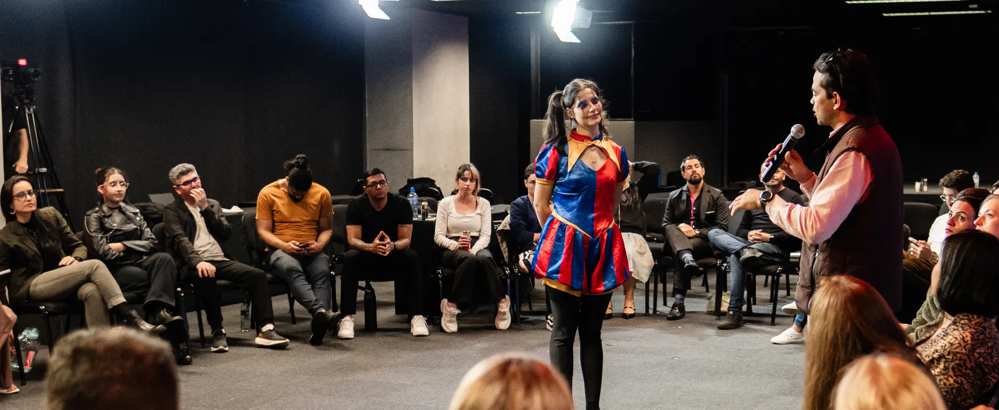

Palestras, campanhas e consultoria
Se a sua marca ou o seu evento quer uma conversa de verdade com a plateia, me chama.
Palestras e eventos: Comportamento e percepção, com a plateia no jogo. Campanhas e publicidade: Conteúdo pra sua marca, feito do meu jeito. Consultoria: Um olhar de fora pra sua imagem e sua comunicação.